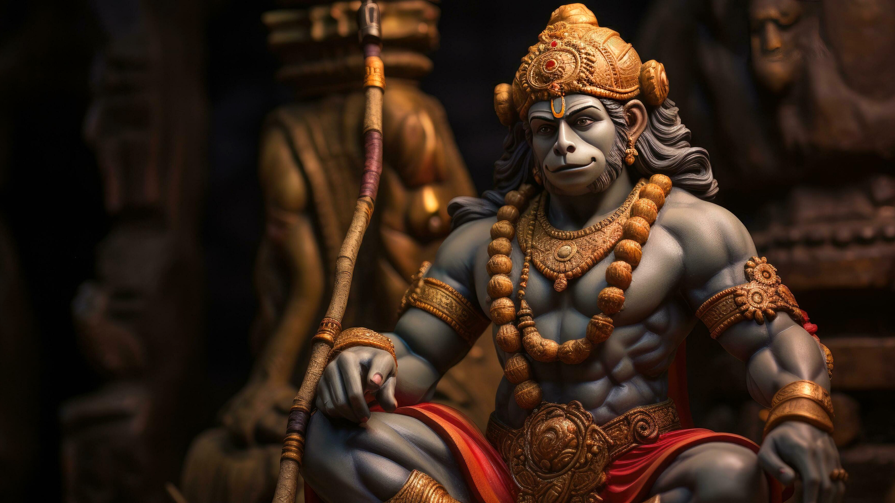

श्रीगुरु चरन सरोज रज, निज मनु मुकुरु सुधारि।
बरणऊँ रघुवर बिमल जसु, जो दायकु फल चारि॥
बुद्धिहीन तनु जानिके, सुमिरौं पवन कुमार।
बल बुधिविद्या देहु मोहिं, हरहु कलेस बिकार॥

जय हनुमान ज्ञान गुण सागर।
जय कपीस तिहुं लोक उजागर॥
रामदूत अतुलित बल धामा।
अंजनि पुत्र पवनसुत नामा॥
महाबीर बिक्रम बजरंगी।
कुमति निवार सुमति के संगी॥
कंचन बरण विराज सुबेसा।
कानन कुंडल कुंचित केसा॥
हाथ बज्र औ ध्वजा बिराजै।
काँधे मूँज जनेऊ साजै॥
शंकर सुवन केसरी नंदन।
तेज प्रताप महा जग बंदन॥
विद्यावान गुणी अति चातुर।
राम काज करिबे को आतुर॥
प्रभु चरित्र सुनिबे को रसिया।
राम लखन सीता मन बसिया॥
सूक्ष्म रूपधरि सियहिं दिखावा।
बिकट रूपधरि लंक जरावा॥
भीम रूपधरि असुर संहारे।
रामचंद्र के काज संवारे॥
लाय संजीवनि लखन जियाए।
श्रीरघुवीर हरषि उर लाए॥
रघुपति कीन्ही बहुत बड़ाई।
तुम मम प्रिय भरतहि सम भाई॥
सहस बदन तुम्हरो जस गावैं।
अस कहि श्रीपति कंठ लगावैं॥
सनकादिक ब्रह्मादि मुनीसा।
नारद सारद सहित अहीसा॥
यम कुबेर दिगपाल जहां ते।
कबि कोबिद कहिं सके कहां ते॥
तुम उपकार सुग्रीवहिं कीन्हा।
राम मिलाय राज पद दीन्हा॥
तुम्हरो मंत्र बिभीषन माना।
लंकेश्वर भए सब जग जाना॥
युग सहस्र योजन पर भानू।
लील्यो ताहि मधुर फल जानू॥
प्रभु मुद्रिका मेलि मुख माही।
जलधि लांघि गये अचरज नाही॥
दुर्गम काज जगत के जेते।
सुगम अनुग्रह तुम्हरे तेते॥
राम दुआरे तुम रखवारे।
होत न आज्ञा बिनु पैसारे॥
सब सुख लहै तुम्हारी शरणा।
तुम रक्षक काहू को डर ना॥
आपन तेज सम्हारो आपै।
तीनों लोक हाँक तें काम्पै॥
भूत पिसाच निकट नहिं आवै।
महाबीर जब नाम सुनावै॥
नासै रोग हरै सब पीरा।
जपत निरंतर हनुमत बीरा॥
संकट तें हनुमान छुड़ावै।
मन क्रम बचन ध्यान जो लावै॥
सब पर राम तपस्वी राजा।
तिनके काज सकल तुम साजा॥
और मनोरथ जो कोई लावै।
सोइ अमित जीवन फल पावै॥
चारों युग परताप तुम्हारा।
है परसिद्ध जगत उजियारा॥
साधु संत के तुम रखवारे।
असुर निकंदन राम दुलारे॥
अष्टसिद्धि नौ निधि के दाता।
अस बर दीन्ह जानकी माता॥
राम रसायन तुम्हरे पासा।
सदा रहो रघुपति के दासा॥
तुम्हरे भजन राम को पावै।
जनम जनम के दुख बिसरावै॥
अन्तकाल रघुबर पुरजाई।
जहाँ जन्म हरिभक्त कहाई॥
और देवता चित्त न धरई।
हनुमत सेइ सर्व सुख करई॥
संकट कटै मिटै सब पीरा।
जो सुमिरै हनुमत बलबीरा॥
जय जय जय हनुमान गोसाईं।
कृपा करहुं गुरुदेव की नाईं॥
जो शत बार पाठ कर कोई।
छूटहि बंदि महा सुख होई॥
जो यह पढ़ै हनुमान चालीसा।
होय सिद्धि साखी गौरीसा॥
तुलसीदास सदा हरि चेरा।
कीजै नाथ हृदय महँ डेरा॥
दोहा
पवन तनय संकट हरण मंगल मूरति रूप।
राम लखन सीता सहित, हृदय बसहु सुर भूप॥